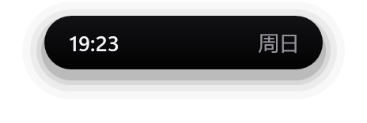
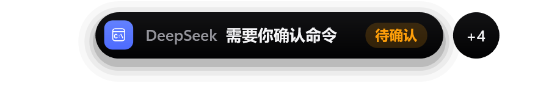
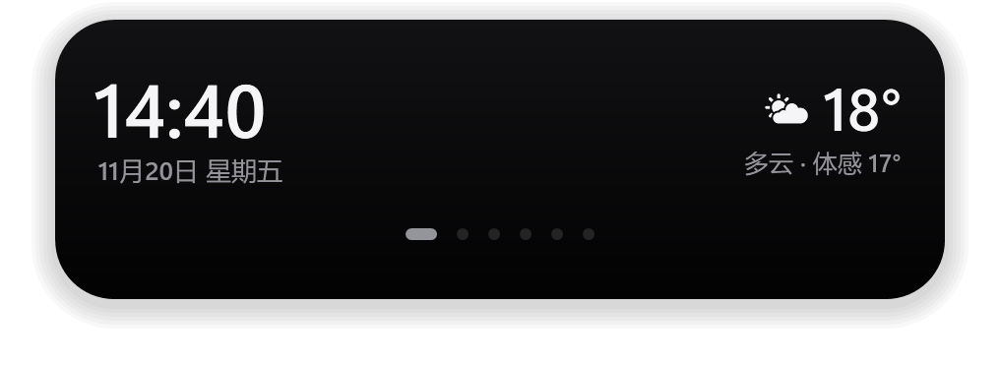
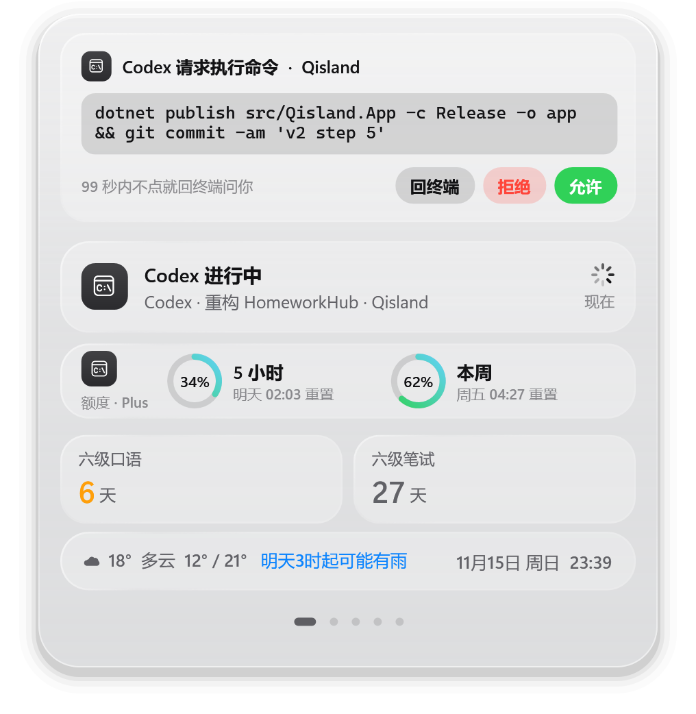

给 Windows 做的灵动岛。下节课、快截止的作业、等你批准的命令、谁在用麦克风——只在需要时出现在屏幕顶上。

没事时，它是钟
有事时，它变形视频约 19 MB，点击后才开始加载。

雨课堂、学习通扫码登录，低频只读截止时间。截止前 24、3、1 小时各提醒一次，交了就不再吵；导入的课表告诉你下一节在哪个教室。

Codex 和 DeepSeek Harness 要执行命令时，岛上直接允许或拒绝。100 秒没点就回终端问你，从不默认同意。
有程序开始用时提示是谁；用着时，时间旁留一个橙点或绿点。
Outlook、Google、飞书、钉钉的 .ics 链接，开始前提醒，会议链接一键加入，支持每月、每年重复。
微信、QQ、腾讯会议、Teams、Zoom 等通话时显示时长，点一下回到通话窗口。
专注计时或 Windows 专注会话期间，只放行审批、通话和快截止的作业，结束后汇总。
连上、断开、电量，20% 和 10% 时提醒。
断网、恢复、换 Wi-Fi，需要网页认证时点一下打开登录页；开着代理也认得出真实网络。
按下 Caps Lock 或 Num Lock，岛上告诉你现在的状态。
游戏和视频全屏时岛自动让开，鼠标推到顶边或按 Ctrl+Alt+Q 随时叫回。
对其他软件改过的每一处都记下来，托盘里一键还原，只删自己加的。
通知里的验证码单独弹出，点一下复制。只在内存里，不写日志。
点一条活动，直接切到对应的软件、终端会话或作业网页。
系统媒体控制里的音乐和视频：封面、进度、逐行歌词，暂停切歌不用翻出播放器。
监听靠系统通知驱动，不轮询；只有动画在跑时才画帧。下面是作者机器（Windows 11、4K、120 Hz）上从本机 /v1/perf 读到的数。
数字只代表这一台机器。
没有服务器，不上传任何东西。
只知道“有新消息”，不读微信消息正文。
课程平台只用扫码登录，凭据用 Windows DPAPI 加密；只读作业，不签到、不刷课、不答题。
音乐软件的播放日志只读不写；验证码和剪贴板历史只在内存里。
本机接口只听 127.0.0.1；改过别的软件的地方都能一键还原。
需要 Windows 10 或 11 和 .NET 8 桌面运行时。下载、解压、运行 Qisland.exe。